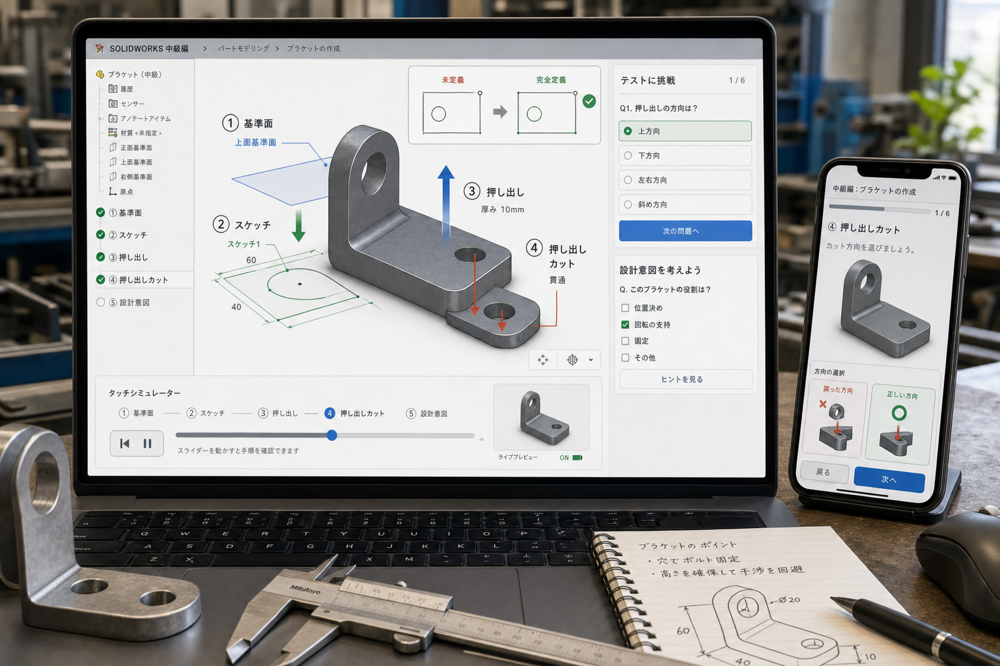

1
5
1 基準面。5 作る順番。
1
5
1 基準面。5 作る順番。
1 基準面（きじゅんめん）
最初の面で、部品の向きが決まる。ここを間違えると、あとで図面や修正がつらくなる。
スケッチから押し出し・押し出しカットで部品にする

初級操作はいったん飛ばして、つまずきやすい設計判断から学ぶ。
画像の番号を見てから、同じ番号の説明を読む。
1
5
1 基準面。5 作る順番。
最初の面で、部品の向きが決まる。ここを間違えると、あとで図面や修正がつらくなる。
 2
2 スケッチ。寸法と拘束で動きを止める。
2
2 スケッチ。寸法と拘束で動きを止める。
線を描くだけでは弱い。寸法と拘束（こうそく：点や線の動きを止める決まり）で形を決める。
 3
3 押し出し。絵に厚みをつける。
3
3 押し出し。絵に厚みをつける。
大事なのはボタンではなく、どの方向に、どこまで伸ばすか。ここが設計判断になる。
 NG
未定義。寸法変更で形が逃げる。
NG
未定義。寸法変更で形が逃げる。
青い線が動ける状態だと、寸法を変えた時に形が勝手にずれる。まず動きを止める。
スライダーを動かすと、実画像が切り替わって作る順番が見える。
1
スケッチを作る前に、作る順番を頭の中で決める。
専門用語を、実務で使う判断に変える。
フィーチャーは、形を作る1手。押し出しもカットもフィーチャー。
スケッチが断面になり、押し出しが奥行きを作り、カットが材料を削る。
3D部品は、平面の絵を順番に積み上げてできるから。
フィレットや面取りを早く入れすぎると、後の変更でエラーが出やすい。
最初の面、完全定義、終端条件、カット方向を先に見る。
作る順番が見えると、軽くて強くて直しやすい形を自分で作れる。
押すだけで答えと理由が出る。
寝る前に、この3つだけ思い出す。
基準面。どの面にスケッチするか。
方向と終端条件（どこで止めるか）。
削る方向と、貫通するか途中で止めるか。